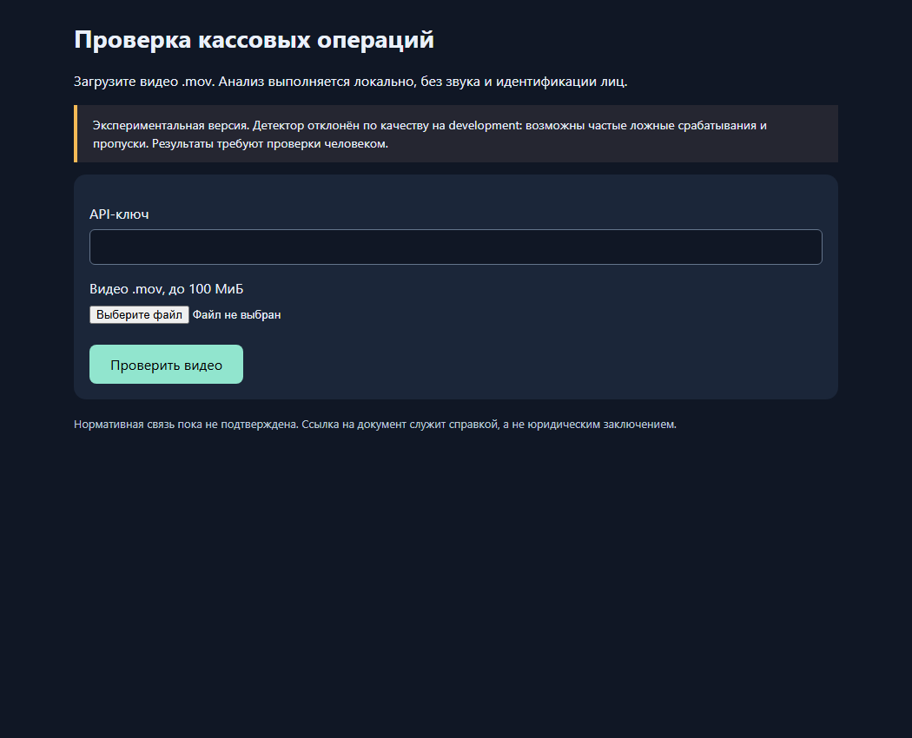
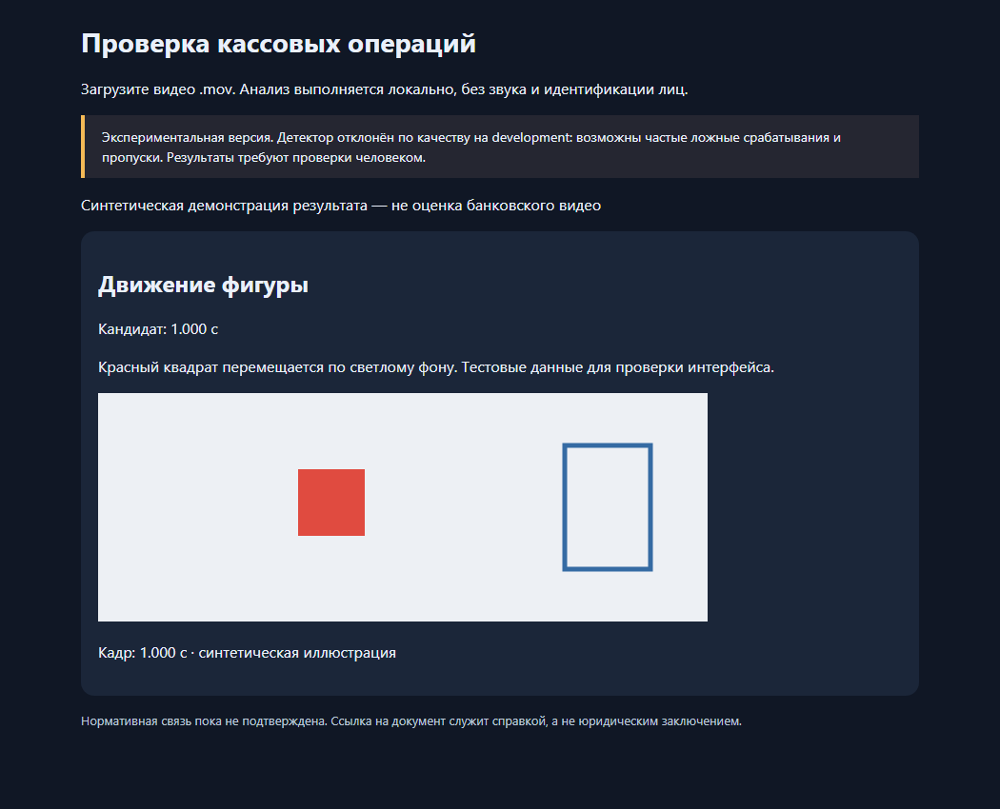

Unemployed — ForteBank Datathon
UNEMPLOYED / FORTEBANK DATATHON 2026
Видео кассовой операции.
Эпизод, который можно проверить.
Загружаем запись → получаем время, описание и кадр → проверяем результат человеком.
Kalila Isatay · Zhansultan Abdugaliev
Локальный прототип. 18 октября 2026.
КАК ПОЛЬЗОВАТЬСЯ
Один экран для загрузки
- Открыть веб-интерфейс.
- Вставить ключ жюри.
- Выбрать файл MOV.
- Нажать «Проверить видео».
Статус показывает ожидание и обработку. При ошибке сервис сообщает failed.

ЧТО ПОЛУЧИТ ПОЛЬЗОВАТЕЛЬ
Время + описание + кадр

Результат привязан к моменту записи.
Кадр позволяет проверить, что послужило основанием для ответа.
Слева — демонстрация на синтетической фигуре. Это не результат на банковском видео и не доказательство точности.
API ДЛЯ АВТОМАТИЧЕСКОЙ ПРОВЕРКИ
Тот же сервис доступен по API
| Запрос | Ответ |
|---|
POST /api/v1/analyze | Принимает MOV → возвращает job_id |
GET /api/v1/jobs/{job_id} | processing → done или failed |
X-API-Key | Ключ передаётся жюри отдельно |
При done: verdict и violations. Для эпизода — type, description, timecode_sec и evidence_frames.
100 МиБ на запрос. Один GPU worker. Очередь ограничена. Сбой обработки возвращает failed, без вымышленного вердикта.
ЧТО РАБОТАЕТ НА НОУТБУКЕ
Обработка остаётся локальной
MOV → кадры по времени → Qwen3-VL-4B → JSON + исходный кадр
Модель запускается из локальных весов. Внешние AI API не используются.
Отдельный редактор позволяет человеку посмотреть фрагмент и сохранить исправление.
Исправления не переобучают веса автоматически. Исследовательский runner и редактор пока не заменили детектор API.
ВЫПОЛНЕННЫЕ ПРОВЕРКИ
Работа сервиса и качество — отдельные измерения
279
тестов локального проекта прошли
87,936 с
один запрос с моделью: загрузка → done
7
слайдов, код и инструкции опубликованы
Проверены авторизация, очередь, дедлайны, восстановление worker, JSON и совпадение кадра с исходным PTS.
Один успешный запрос не доказывает точность и не гарантирует обработку любого видео за 300 секунд.
ИТОГ
Сервис готов к технической проверке.
Качество требует доработки.
Сделали
Локальный inference, веб-загрузку, API, очередь, кадр-доказательство, ручную проверку фрагментов.
Не решили
Стабильное распознавание действий и предметов. API-детектор не прошёл проверку качества; нормативная привязка не подтверждена.
Внутренняя полнота событий dense runner: 1/17 на 4 видео. Проба с исправленными примерами: 0→1/4 совпадений, но ошибки ссылок 2→8. Автоматическое включение отклонено.